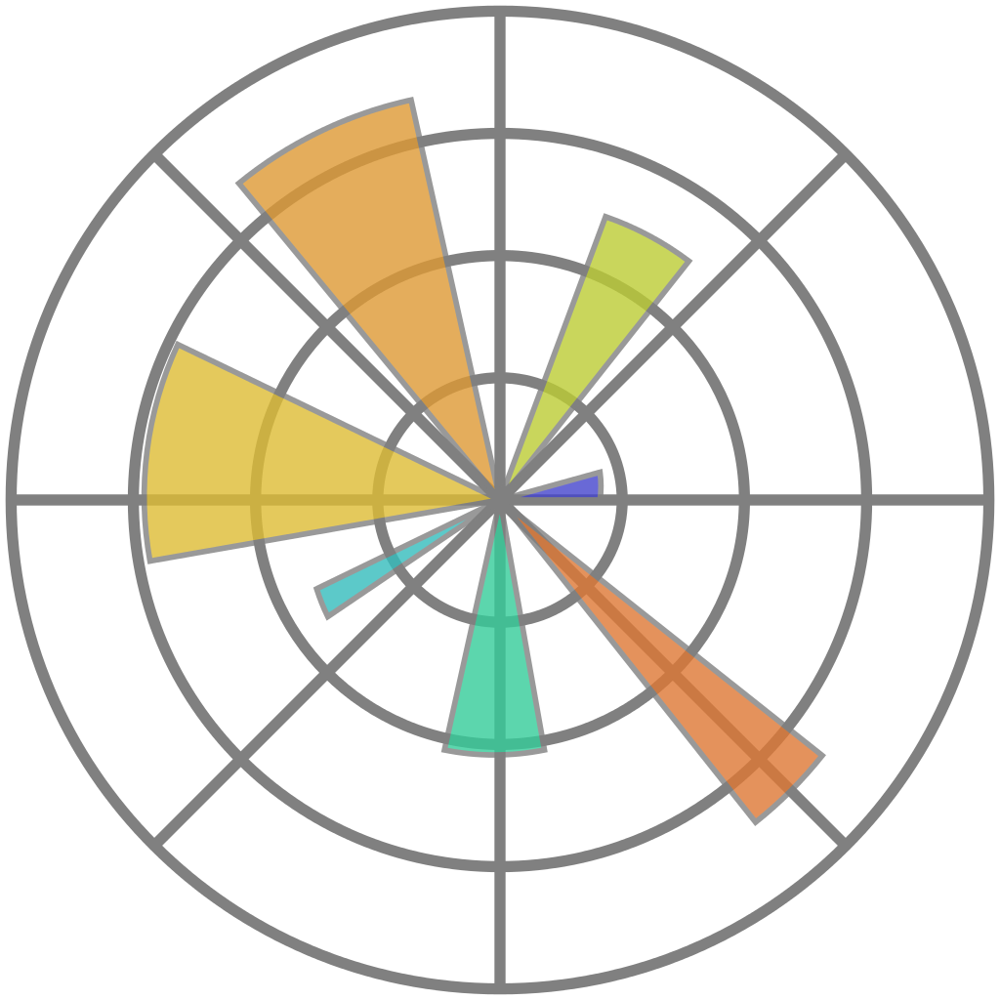
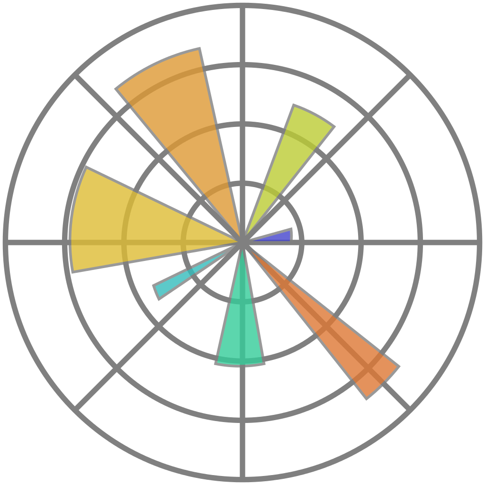

Researcher Training for the data-dominated age
James Hetherington
Reproducible research methods

Logos are used here to represent the kind of thing I'm talking about, not at all exhaustive of all the cool things you need to know
Computational collaboration methods

Data wrangling and presentation

 

The same things domain scientists do
High performance computing and optimisation


Expressive mathematical programming

The same things as domain scientists
The same things as algorithms researchers
Deployability

Continuous Integration
Documentation
Software Project Management